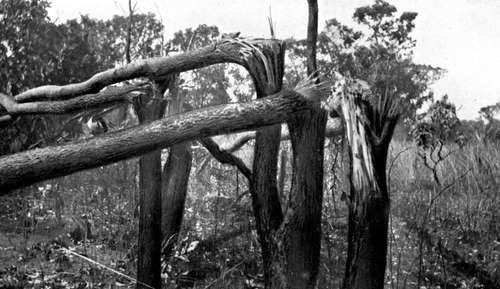

The Risks Of Big-Game Shooting. Part 6
Description
This section is from the book "Wild Life In Central Africa", by Denis D. Lyell. Also available from Amazon: Wild Life in Central Africa.
The Risks Of Big-Game Shooting. Part 6
However, no rule can be laid down, as animals differ greatly as to temperament in different localities, and it is quite impossible to say how any animal will act under given circumstances.
As this is a book about Africa, I do not wish to write of India or America. In the former country many sportsmen have been killed by tigers, and I think they are every bit as dangerous animals as lions. Many are shot from the backs of elephants or from platforms, except in some districts where it is usual to hunt them on foot. A full-grown Indian tiger would be a match for a big lion, and, although the forequarters of the lion are probably more powerful than those of the tiger, the latter would gain in agility.
It would be a grand sight to see two of these fine beasts having a fight to the death.
The rhino, both black and white varieties, does not seem to have caused many deaths, although I have read of a few within the last twenty years. A good many men have been damaged by them, and that grand old sportsman, the late Mr. William Cotton Oswell, had adventures with both varieties when he was hunting in South Africa long ago.
Some notes I have about deaths to white men include that of Prince Ruspoli, who was killed in Somaliland by an elephant. Then Colonel Armstrong and Mr. York met their deaths in Uganda in the same way.
Mr. F. L. James, also, was trampled to death by an elephant in West Africa, and Mr. Ingram was another victim to the same species.
Mr. Selous mentions the death of an Englishman named Firmin in 1870, and a Swede named Dr. Wahlberg also was killed by an elephant in Matabeleland.
When Matabeleland and Mashonaland were taken over, a good many white men were killed by lions, and the death-roll in British East Africa must be very large indeed.
Yet a famous surgeon who visited that country on a non-sporting tour wrote some derogatory remarks about lion hunting.
Certainly, shooting lions after running them down with a pack of dogs is not a particularly sporting method, and neither is a beat composed of several hundred natives, and perhaps five or six guns ; but if a white man tackles a single lion or a troop of lions all by himself, accompanied only by a gunbearer carrying a second rifle, he will get as much healthy excitement as he requires. Certainly, if the famous surgeon had gone in for this sport in the way mentioned, his statements would be vastly different. He had only to ask any resident doctor in Nairobi for a few details as to the people who have been treated there after being mauled by lions, to have got at the truth, which would have resulted in his expressing different ideas on the subject.
It is fairly well known nowadays that lions kill by biting, and only use their claws for gripping or to pull an object to their mouths. The paralysing effect of their bites seems to cause a numbness at the time, although soon afterwards the wounds become excessively painful. A lion does not use his paws to give a blow, like a tiger does, as was the popular idea long ago. He is said to come along the ground like a large dog, and on reaching his victim to stand up on his hind legs and grip him with his jaws. Naturally, if a man was kneeling, or flat on the ground, the lion would not stand up, and in this case he would hold with his claws and bite with his teeth.
Trees Broken By An Elephant. (From 25in. to 35in. in circumference.)
Another popular fallacy connected with wild animals is that the buffalo charges with his horns lowered. This he does not do, for he holds his nose straight out, quite protecting his head from the brain-shot. When within striking distance he lowers his horns, and either lifts his enemy in the air and catches him again or he knocks the hunter down and gores him, and also has been known to trample the body with his front feet. An elephant and a lion often leave their victim after mauling him slightly, but a buffalo will likely spend some time mutilating the corpse, and, although this may be termed vindictiveness, I do not blame the buffalo for resenting his injuries on the person who caused them, if he can get hold of him. He acts according to his nature.
Elephants usually pierce with their tusks or use their forefeet to trample a man, but sometimes they seize the body and tear it into fragments.
Anyone who has watched an elephant playing with a big tree, and has seen the way he can bend and break it, will no longer wonder how puny an object a man is when in the power of such a monster.
A rhino gores with his front horn, and, as he is a very powerful animal and his horns are sometimes very sharp, the man who escapes after getting beneath a rhino's nose may consider himself a lucky individual.
The natives seem to be more afraid of rhinos than they are of elephants, lions, or buffaloes ; why, I do not know, except that they say he is always in a bad temper. He has the habit of turning over his dung with his front feet and horns, and the natives think this shows him to be a hot-tempered customer.
Rhinos are certainly very easy to kill with modern small bores, and a great number have been shot with .303 and 7.9mm. rifles.
By climbing a tree for a distance of six or eight feet one could get away from a buffalo or rhino, but such a height would be no safeguard against an elephant, lion, or leopard.
When wounded, the leopard can be a very dangerous animal, although he is easy to kill as a rule. In charging he comes along with a spring or bound, and is thus very hard to hit. A friend, who has had the opportunity of shooting a good number of leopards, told me that, when wounded and followed, they will generally move on twice when disturbed; but that they almost invariably charge on being closely approached for the third time. They take cover behind the slightest vegetation, and, when lying quiet, they are most difficult to see. For following such an animal one could not possibly have a better weapon than an ordinary 12-bore shotgun loaded with A.A.A. or S.S.G.
Continue to:
- prev: The Risks Of Big-Game Shooting. Part 5
- Table of Contents
- next: The Risks Of Big-Game Shooting. Part 7